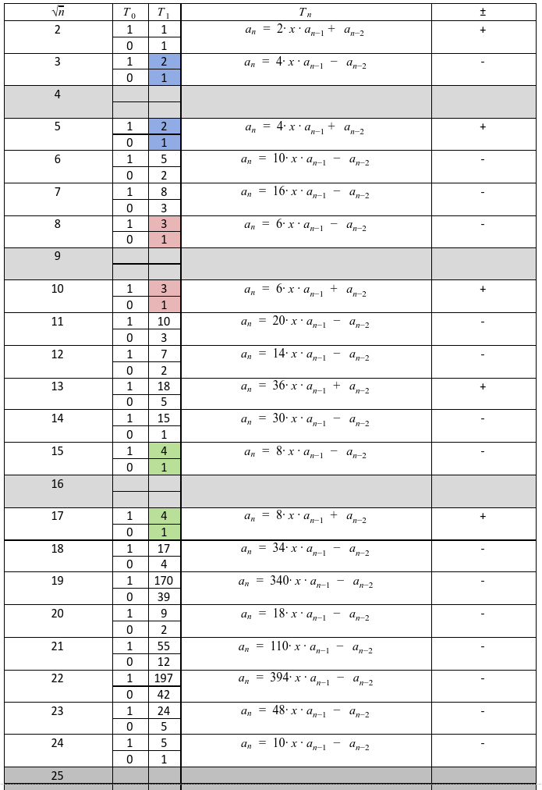

This page is for showing a little bit of appreciation for math. The first part is report of my private side project during second semester. While the second part is a Flutter application.
The reversible element of a ring $(\mathbb{R}, +, \cdot)$ is called the element $\exists b \in \mathbb{R}$ that satisfies: $a \cdot b=b \cdot a=a$. The invertible elements in the ring of integers are of course only $\{-1,1\}$. Algebraic structures can be extended with elements that do not belong to their sets, just as we do with extending real numbers into composite numbers using the imaginary unit $i$. Then our complex number is of the form $a + bi$ where $a,b \in \mathbb{R}$ , $(\mathbb{R}(i))$. We do the same with integer expansions. Here we will consider expansions of the squares of the natural numbers, $\mathbb{Z}(n)$, which have the form $a + bn$.
The inverse element of the form $a + b\sqrt{n}$ will have the form $(a + b\sqrt{n})^{-1}$ which we will denote by $\frac{1}{a + b\sqrt{n}}$. By side by side multiplication we obtain another form of the inverse element $$\frac{a - b\sqrt{n}}{a^2 - n \cdot b^2} = \frac{a}{a^2 - n \cdot b^2} - \frac{b}{a^2 - n \cdot b^2} \cdot \sqrt{n}.$$ Hence we see that for the inverse element to be in the ring the following must occur: $\frac{a}{a^2 - n \cdot b^2}$ , $\frac{b}{a^2 - n \cdot b^2} \in \mathbb{Z}$. So what integers have the property that: $$(1) \; (a^2 - n \cdot b^2 | a) \land (a^2 - n \cdot b^2 | b)?$$ Note the special case in which: $$(2) \; a^2 - n \cdot b^2 \in \{-1, 1\},$$ then of course regardless of $a$ and $b$ the fraction is integer. Note: It is not difficult to see that the numbers $a$ and $b$ will occur in fours: $(a,b)$, $(-a,b)$, $(a,-b)$, $(-a,-b)$. Instead, we will focus on pairs with both positive numbers. Note: Expanding by squares $$4, 9, 16, 25 \, ... $$ obviously gives the original ring $(\mathbb{Z}, +, \cdot)$.
I wrote the algorithm that found out that in $[0, 10^6]$ all the numbers satisfying $(1)$ are satysfing "less
likely" $(2)$.
Some examples for $\mathbb{Z}(\sqrt{2})$:
$$a = 1, 1, 3, 7, 17, 41, 99, 239, 577, 1393, 3363, 8119$$
$$b = 0, 1, 2, 5, 12, 29, 70, 169, 408, 985, 2378, 5741$$
The invertible elements of a ring of integers extended by a natural root are coefficients at recursively determined Chebyshev polynomials of the first kind.
Chebyshev polynomials are a system of orthogonal polynomials that form the basis of a polynomial space. The first order Chebyshev polynomials are given by the formula: $$T_0(x) = 1, \; T_1(x) = x,$$ $$T_n(x) = 2 \cdot x T_{n-1}(x) - T_{n-2}(x).$$ with a generating function: $$\sum_{n=0}^{\infty} T_{n}(x) \frac{t^{n}}{n !}=\frac{1}{2}\left(e^{t\left(x-\sqrt{x^{2}-1}\right)}+e^{t\left(x+\sqrt{x^{2}-1}\right)}\right)=e^{t x} \cosh \left(t \sqrt{x^{2}-1}\right) .$$ Results for ${2, 3 , ... 25}$:
